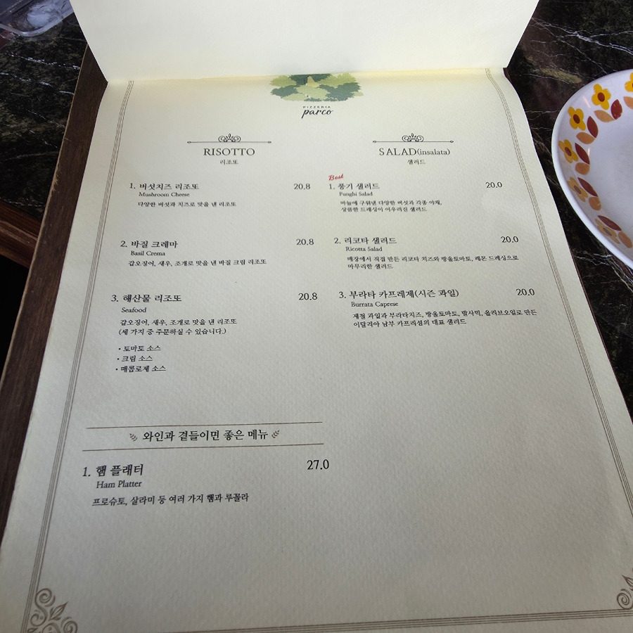
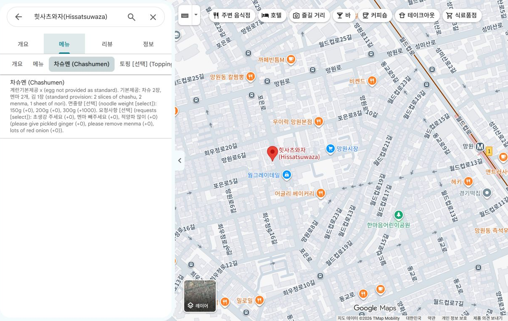

메뉴판 사진 속 재료·소스 선택 정보를 해당 메뉴의 텍스트 설명으로 연결
실제 지도 ↗바꾼 내용과 원문 근거
정보는 있지만, 사진과 텍스트 메뉴가 분리됨
2026-11-06 실제 메뉴 19개에서 이름·가격을 확인했습니다. 첫 세 메뉴에는 설명이 없지만, 같은 페이지 메뉴판 사진에는 재료와 소스 선택 조건이 적혀 있습니다.
- 버섯치즈 리조또 → 버섯·치즈 구성 추가
- 바질 크레마 → 갑오징어·새우·조개, 바질 크림 리조또 설명 추가
- 해산물 리조또 → 재료 + 토마토·크림·매콤로제 소스 선택 연결
메뉴명과 가격 19개는 원본 그대로 유지했습니다. 사진에서 확인되지 않은 인분·중량·주문 시간은 추가하지 않았습니다.

원본 메뉴판 확대 ↗바꾼 내용과 원문 근거
한 문단에 섞인 구성·선택·추가금을 분리
2026-11-06 Chrome에서 실제 차슈멘 메뉴 상세를 확인했습니다.
- 기본 구성: 차슈 2장 · 멘마 2개 · 김 1장. 계란 미포함.
- 면 중량 선택: 150g·200g 추가금 없음 / 300g +1,000원.
- 무료 요청 선택: 초생강 추가 / 멘마 제외 / 적양파 많이.
원문에 있는 사실을 한국어 세 문단으로 정리했습니다. 메뉴 기본 가격은 이 설명 칸에 없어 추가하지 않았습니다.

원본 화면 확대 ↗